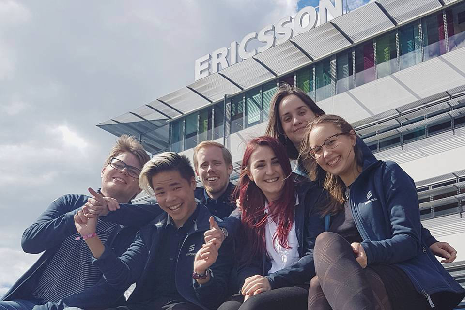
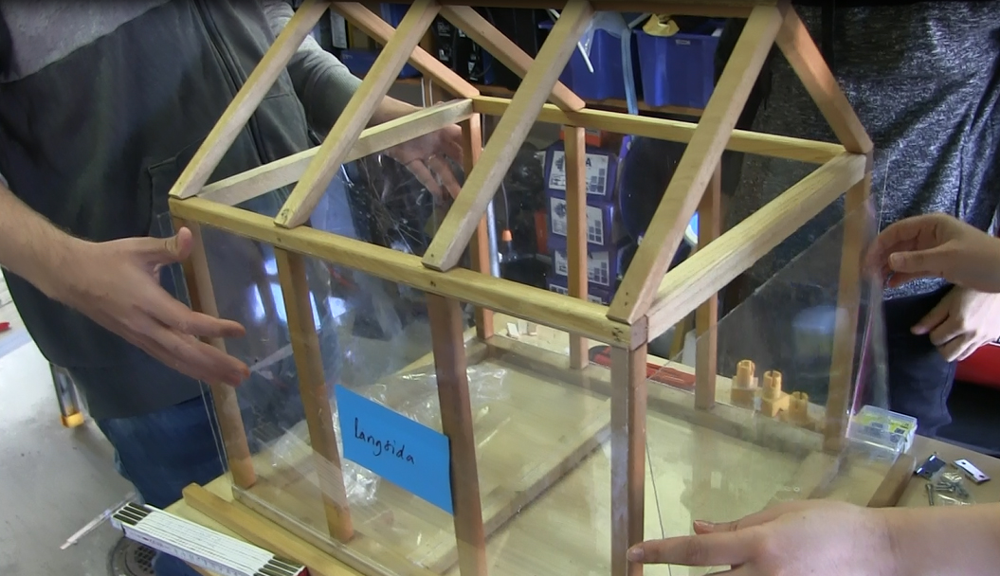
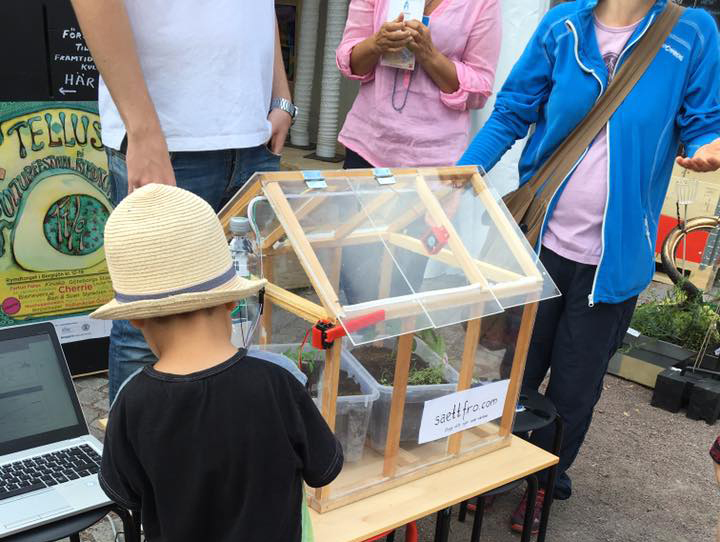

Prototyp - Smarta växthus:
Ericsson AB, Uniteam GBG
Under sommaren 2016 tog ingenjörsteamet Uniteam GBG från Ericsson AB fram en första prototyp av mindre automatiserade växthus som drivs av en Arduino. Målet var att ta fram en lågteknologisk lösning som högstadieelever med hjälp av en manual ska kunna bygga. Förutsättningarna var att växthusen inte får kosta mer än 2500 SEK och att den till högsta grad skulle vara bygg med återanvänt material.
M.Sc. studenter:
- Ajla Ćano, Computer Science and Engineering

- Danny Lam, Information Technology
- Ellinor Rånge, Computer Science
- Olliver Mattsson, Information Technology
- Per Welander, Biomedical engineering
- Rebecka Reitmaier, Information Technology
- Victor Larsson, Information Technology
Samarbetspartners:
Ericsson Uniteam, Göteborg
Ingenjörteamet Uniteam är bryggan mellan student och Ericsson världen. Studenter från KTH, Linköping och Chalmers som är passionerade för teknologi och Ericsson agerar som studentambassadörer. Som studentambassadör ska de öka Ericssons närvaro i både universteten och introducera dem till framtida karriärer hos Ericsson. En stor del av Göteborgslagets arbetsuppgifter är att hålla programmeringskurser. Som en förlängning av detta arbete och för att kunna skapa en långsiktig kompetenssatsning inom svensk skola, påbörjades samarbetet med Så ett frö. Uniteams uppgift blev därmed att bygga en prototyp av ett växthus samt ta fram en manual.
Smarta växthus, prototyp.
I en värld där alla prylar i våra hem, städer och samhälle kopplas upp mot molnet är det även intressant att utforska hur lokala småskaliga odlingar i hemmet kan sammankopplas och skicka information till varandra. Effekten av denna lösning innebär att alla brukare kan ta del av varandras lösningar för att finna det optimala läget för att odla en viss grönska. I en skolmiljö blir detta ett intressant utgångsläge hur man kan kombinera praktik med teori, hållbar utveckling med IT/teknik. Uniteam fick i uppdrag under sommaren 2016 att ta fram ett växthus som via sensorer automatiserar skötseln av växthuset med funktionen att samla upp data och ladda upp det på nätet. Budgeten bestod av 2500 SEK där kravet var att i högsta grad använda sig av gammalt byggmaterial. Därmed minimerar bygget dess miljöpåverkan samt ökar den kreativa processen. När Uniteam besökte Returhuset i Östra Göteborg såg de plötsligt möjligheten att bygga växthus med allt från gamla fönster, tavlor till akvarium. De kontaktade experter inom växthus och odling för att finna den bästa lösningen då alla i laget var inom informationsteknik.

Manualen, spridning.
Så ett frö arbetar främst i skolmiljöer men vi ser vikten av att all information och kunskap ska finnas tillgängligt för eleverna och allmänheten. Därmed inkluderade vi i Uniteams uppdrag att skriva en manual som sedan publicerades på nätet. Manualen går igenom grundligt hur man bygger själva växthuset, hur man installerar sensorerna och avslutningsvis hur man programmerar Arduinon. Ingen förkunskap ska behövas för att genomföra projektet och det finns många möjligheter till att konfigurera den efter sina egna behov. Kostnaderna för elektroniken står för mindre än hälften av budgeten. Genom att bygga med återanvänt material lyckas Uniteam dra ner kostnaderna för byggnadsmaterial till ca 500kr. Något vi rekommenderar alla.

Göteborgs Kulturkalas 2016, Kulturhus Bergsjön.
Runt om i Göteborg planeras det att byggas nya kulturhus, ett av dessa är placerade i Bergsjön. Många av dessa kulturhus har bestämt att anamma en skaparkultur som en viktig del av deras utbud. Kulturhuset Bergsjön har även planerat att ha en tydlig grönprofil. Vi kom i kontakt med ansvariga för kulturhuset och inledde ett samtal hur vår verksamhet i Bergsjön kan komplettera deras utbud. Vi såg tydliga synergier och bestämde att under Göteborgs Kulturkalaset 2016 ställa ut protoypen som Uniteam byggt för att visa på aktiviteter som faller inom skapande kultur och en grön stadsdel.
